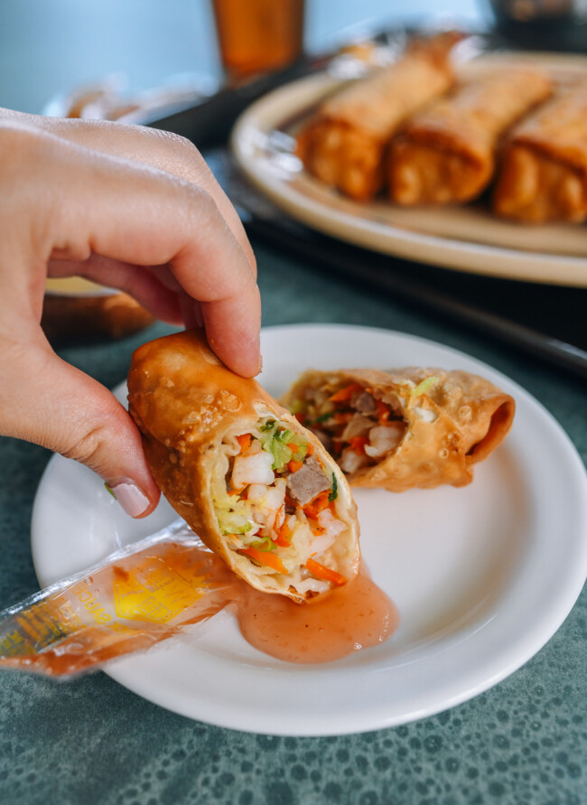

EGG ROLLS
Egg rolls. They’re the quintessential Chinese takeout food. This easy egg roll recipe is a copycat of the basic version you’ll find in takeout places and Chinese buffets, with cabbage and roast pork in the filling.
Egg rolls are fried, savory rolls, generally filled with cabbage, chopped Chinese roast pork, and sometimes shrimp. The wheat flour-based wrappers form small bubbles when fried, giving them their signature look.
It is an American creation that evolved from Chinese spring rolls, sometime in the early 20th Century.
Contrary to the name, the filling does not actually contain egg, and there may or may not be eggs in the wrapper! Like other fried foods, they’re often served with duck sauce, a sweet condiment popular in Chinese-American takeout restaurants.
Happy Cooking!